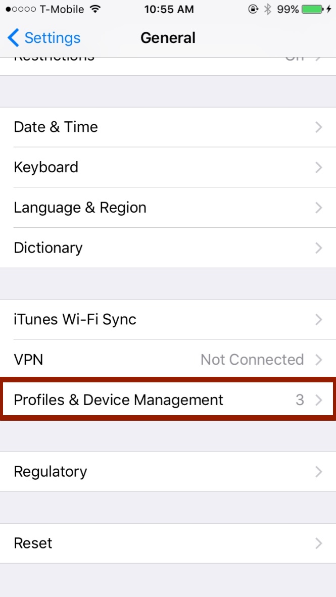
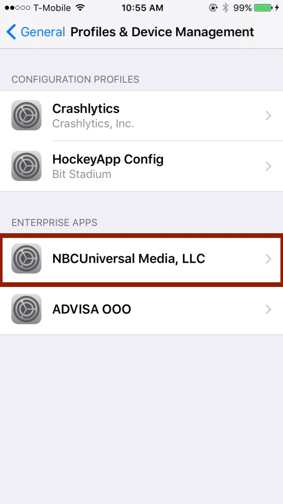

MPS SDK Test App
6.1 TestApp Installation
You can install the TestApp using the HockeyApp application.
HockeyApp test application
How to install test app from HockeyApp
After you logged in the HockeyApp you will see the apps.

Click on 'Install'

If you install it first time - you'll see this notification.

To remove this notification go to 'Settings->General'. Find 'Profiles & Device Managament' and click on it.

Choose 'NBCUniversal Media, LLC'.

Click 'Trust'
You've installed the MPS SDK TestApp.

6.2 TestApp Usage
You can use the MPS SDK TestApp to confirm that the SDK is operating correctly. This can be useful for verifying the functionality of your mobile app.
Main page
Set your parameters for the ads you want to view in the TestApp.
Tap the Make MPS Request button to initialize the session.
Tap the Display Banner Ad button and Display Interstitial Ad button to view the ads that match your test parameters.
Sandbox page
Tap the Screens button for the ad you want to review.
Use the Interstitial toggle to display interstitial ads instead of banner ads.
Tap the Open Web View button to view the ad in a web view.
Settings page
The MPS Site Configurations section displays the configuration values that were defined in MPS.
The SDK Versions section displays the MPS SDK version and the Google Mobile Ad SDK version that are built into this version of the TestApp.